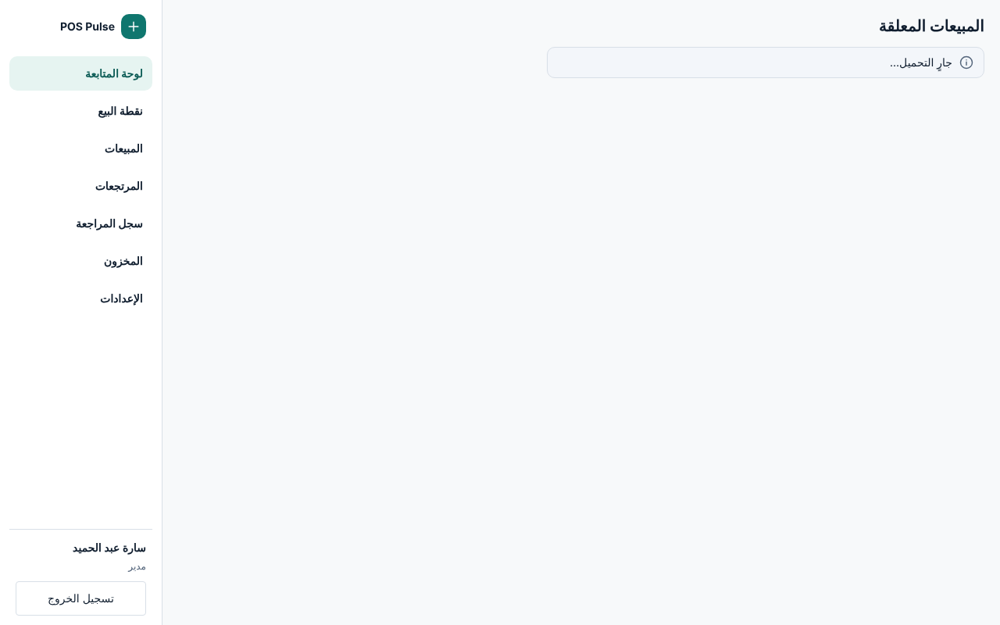
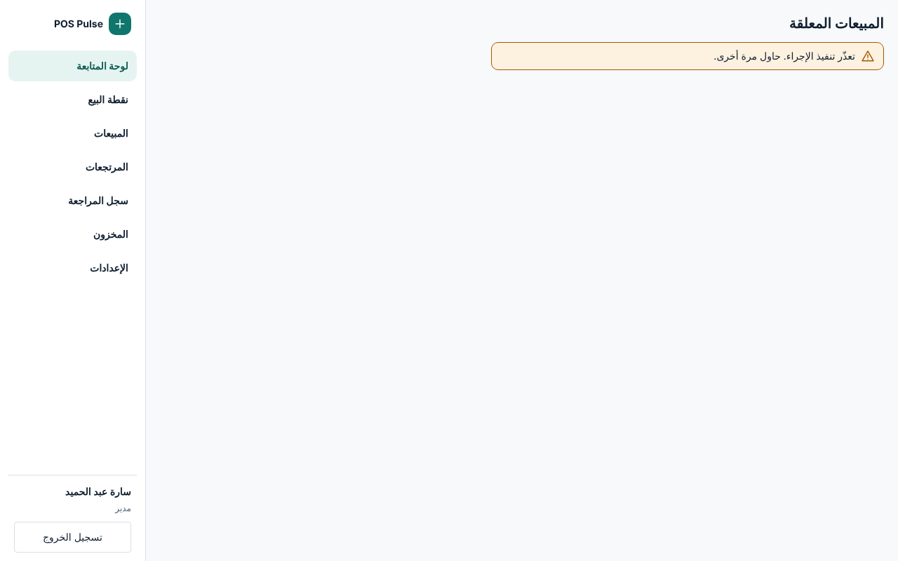

المبيعات المعلقة للمدير: مراجع الصفحة على رأس G-6
مسودة · بانتظار موافقة المالك · Jira RT-656 · السلوك من RT-441
التصنيف: مراجع شكل فقط. السلوك كما على main (src/renderer/v5/recovery/)، والبيانات من الأداة #/dev/recovery-proof. الإطار ورأس الصفحة واللوحات والأزرار من G-6 (RT-478). كل نص مأخوذ حرفيًا؛ لا نص جديد.
خارج النطاق: سلوك الاستعادة، وجسر الاستعادة، والعملية الرئيسية.
الحالات (18 حالة × 1024×768 و1280×800)







الصور تتناوب بين 1280 و1024 للاختصار. لكل حالة ملفان RC-<State>-1024.html و-1280.html والصور في captures/ (فاتح وتباين عالٍ لكل عرض).


ما رُسم وما التزم به
- رأس G-6: العنوان «المبيعات المعلقة» في
screen-headبدل شريط الورديةv5-shift-mgr-head، واللوحتان بشكلpanel/panel-headمن G-6. - الدفع المعلّق على البداية بعرض 360 (300 في 1024)، و«المتبقي» أكبر رقم في الصفحة؛ والمبيعات المحفوظة تملأ الباقي وتُمرَّر.
- الإجماليات فقط: لا بنود، ولا اسم تعليق، ولا معرّف موظف؛ الموظف غير المعروف «موظف آخر». سطر دفع صفري لا يظهر.
- الحالات وسوم بنص («مسودة»، «في الدفع»، «معلّقة») لا بلون وحده.
- النافذة تركيزها الأول على «رجوع» كما على main، و«تأكيد» معطّل حتى يكتمل المطلوب؛ كل ما خلفها خامل.
- الخط Dubai لكل نص عربي، والأرقام غربية LTR جدولية للمبالغ والأعداد فقط (
1,284.50 EGP). لا تاريخ في الشاشة (OD-2). - لم يُرسم: تحميل الموافِق داخل النافذة («جارٍ التحميل…» في نفس المكان)، وانتظار الإرسال (الأزرار معطّلة).
خريطة أسباب الرفض
| السبب | الحالة |
|---|---|
listHeld: role_mismatch | رُسمت (Refused): «هذه الشاشة للمدير فقط.» |
listHeld رُفض أو تعذّر | رُسمت (Unavailable): «تعذّر تنفيذ الإجراء. حاول مرة أخرى.» (OD-3) |
listApprovers: approvers: [] | رُسمت (NoPin) |
listApprovers: session_locked | رُسمت (ApproverLocked): «الجهاز مقفل.» |
request: approval_unavailable | رُسمت (WrongPin) |
سائر الأسباب (not_found، approval_stale، cash_insufficient، …) | نصها من recoveryRefusalMessage في نفس مكان الخطأ في النافذة (كما WrongPin)، بلا حالة منفصلة |
النصوص (كلها مأخوذة، لا نص جديد)
| المكان | النص | المصدر |
|---|---|---|
| عنوان الصفحة (h1) | «المبيعات المعلقة» | RECOVERY_COPY.title |
| وضع الاستعادة | «دخلت لإنهاء دفع معلّق على هذه الطرفية. لا يمكن البيع حتى يُكمَل الدفع أو يُلغى.» | recoveryMode |
| التحميل | «جارٍ التحميل…» | loading |
| لوحة الدفع | «دفع معلّق» · فارغة: «لا يوجد دفع معلّق على هذه الطرفية.» | stuckTitle · noneStuck |
| حقائق الدفع | «الموظف» · «عدد الأصناف» · «الإجمالي» · «نقدي مدفوع» · «بطاقة مدفوعة» · «قسيمة مستخدمة» · «المتبقي» | owner … remaining؛ سطر الدفع الصفري لا يظهر |
| أزرار الدفع | «إكمال البيع» · «إلغاء الدفع» | complete · cancelPayment |
| لوحة المبيعات | «مبيعات محفوظة لموظفين آخرين» · فارغة: «لا توجد مبيعات محفوظة لموظفين آخرين.» | heldTitle · noneHeld |
| سطر البيع | الاسم أو «موظف آخر» · «مسودة» / «في الدفع» · «معلّقة» · الإجمالي · «عدد الأصناف ‹n›» · «إلغاء البيع» | someoneElse · draft · handedOff · parked · cancelSale |
| نافذة الإجراء | العنوان = اسم الإجراء · «رجوع» · «تأكيد» | RECOVERY_ACTION_TITLE · back · approve |
| النقدية | «المتبقي: ‹مبلغ›» · «النقدية المستلمة للمتبقي» | remaining · cashReceived |
| تأكيدات الإلغاء | «أرجعتُ النقدية المدفوعة للعميل (‹مبلغ›)» · «ألغيتُ دفع البطاقة على جهاز البطاقة» | confirmCash · confirmCard |
| الرقم السري | «أدخل رقمك السري لتأكيد هذا الإجراء.» · «الرقم السري — ‹اسم المدير›» | approvalBody · pinLabel |
| لا رقم سري | «لا يوجد لك رقم سري مدير مفعّل على هذه الطرفية. سجّله من شاشة الوردية، ثم عُد.» | noPin |
| النتائج | «اكتمل البيع. الباقي للعميل: ‹مبلغ›» · «أُلغي الدفع وسُجّل الإرجاع.» · «أُلغي البيع المحفوظ.» | completed + change · cancelledPayment · cancelledSale |
قرارات المالك (بانتظار قرار المالك)
| # | النقطة | المقترح |
|---|---|---|
| OD-1 | رأس الصفحة والتنقل | رأس G-6: «المبيعات المعلقة» وحده بلا سطر فرعي (لا نص جديد)، والعنصر الحالي في التنقل «لوحة المتابعة» لأن الصفحة تُفتح من بطاقتها، كما رسم G-6 «الورديات العالقة». بديل: سطر فرعي بنص البطاقة الموجود «دفع معلّق، أو مبيعات محفوظة لموظفين آخرين.». التوصية: بلا سطر فرعي. |
| OD-2 | التاريخ والوقت | الشاشة على main لا تعرض started_at ولا updated_at، فلا تاريخ في المراجع. إن أراد المالك وقتًا لكل سطر فهو نص جديد وتغيير عرض يُقرَّر منفصلًا، ويُكتب بخط Dubai وأرقام غربية (ar-EG-u-nu-latn). التوصية: كما على main، بلا وقت. |
| OD-3 | تعذّر تحميل القائمة | النص الحالي «تعذّر تنفيذ الإجراء. حاول مرة أخرى.» يتكلم عن إجراء لا عن تحميل، ولا زر لإعادة المحاولة. رُسم كما هو. نص مخصص أو زر إعادة محاولة سلوك جديد خارج RT-656. التوصية: كما رُسم الآن، ومتابعة النص في عمل منفصل إن أراد المالك. |
| OD-4 | التركيز بعد رفض الرقم السري | على main يُمسح الرقم السري ويتعطل «تأكيد» فيضيع التركيز. المرجع WrongPin يضع التركيز في حقل الرقم السري. هذا نقل تركيز فقط بلا تغيير في السلوك. التوصية: اعتماده ضمن تنفيذ RT-656. |
| OD-5 | زرا الإلغاء | «إلغاء الدفع» و«إلغاء البيع» زران محايدان كما على main، لا بلون الخطر؛ كل منهما يفتح نافذة تأكيد برقم المدير السري. التوصية: محايدان. |
| OD-6 | التحميل | على main نص عادي؛ المرجع يرسمه إشعارًا محايدًا (نفس النص) كبقية صفحات G-6. التوصية: كما رُسم. |
| OD-7 | نافذة «إلغاء البيع» لا تسمّي البيع | كما على main: العنوان والرقم السري فقط. إضافة اسم الموظف والإجمالي في النافذة تغيير عرض بلا نص جديد. التوصية: كما على main، ويمكن إضافتها لاحقًا. |
التباين العالي
- كل لوحة وزر وحقل ووسم وإشعار حدّه بلون النص؛ «المتبقي» والتحذير بحد 2 بكسل.
- العنصر الحالي في التنقل
Highlight، والزر المعطّلGrayText، وحلقة التركيزHighlight.
الفحوص المنفّذة على الملفات
أُنتجت الصور وفُحصت بـtools/capture_rc.cjs (فحوص G-3 وG-6 وPK-3 المشتركة في ../tools/capture-refs.cjs): الاحتواء داخل الإطار، لا تدفق أفقي، لا نص أصغر من 12 بكسل،
لا هدف أصغر من 44×44 (هدف خانة الاختيار سطرها كله كالراديو)، لا اسم مقصوص، لا عنصر قابل للتركيز خلف النافذة، وaxe-core بلا مخالفات. 36 ملفًا، صفر إخفاق.
الملفات من tools/gen_rc.py وهذه الصفحة من tools/gen_rc_spec.py.